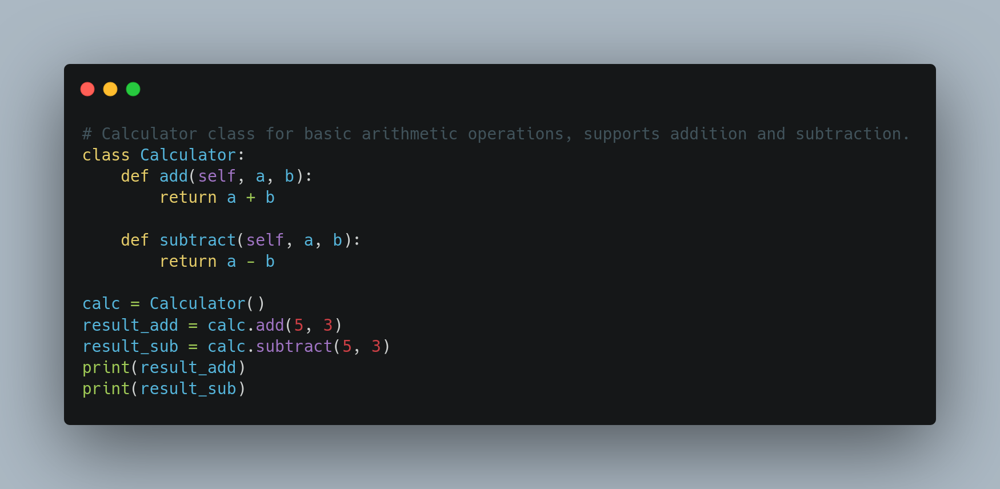

Extension Screenshots

Example of generating a concise comment for a function.

Generated detailed comment for a class definition.
Generate intelligent comments for your code using Google's Generative AI API.
Commento helps developers quickly generate comments for their code by leveraging the power of Google's Gemini AI. It supports multiple languages and provides concise or detailed comments based on the context of the code.
Ctrl + Shift + P on Windows/Linux or
Cmd + Shift + P on macOS).Preferences: Open Settings (JSON) and select it.
{
"commento.apiKey": "your-api-key-here"
}
Ctrl + Shift + P or
Cmd + Shift + P).Commento: Concise Comment for concise comments or
Commento: Detailed Comment for detailed comments.Ctrl + Shift + X or Cmd + Shift + X).
Extension Settings to configure the API key or other preferences.
Example of generating a concise comment for a function.
Generated detailed comment for a class definition.